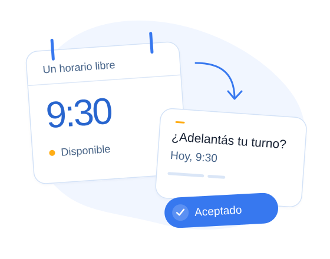

Esperando confirmación
Alvia pide confirmación 24 horas antes.
Gestión inteligente de turnos
Alvia pide confirmación 24 horas antes. Si un paciente cancela, contacta a otros de la misma especialidad y asigna el horario al primero que acepta.
Quiero verlo en una demo
Alvia pide confirmación 24 horas antes.
Si un paciente cancela, contacta a otros de la misma especialidad y asigna el horario al primero que acepta.